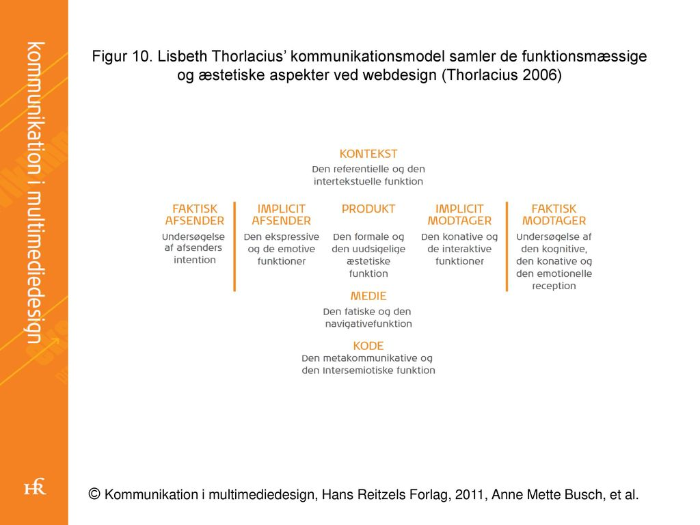
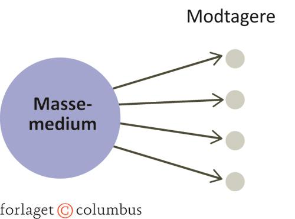

Paradigmer er teorier og metoder inden for et videnskabeligt arbejdsområde. Inden for kommunikationsfaget er der to interessante paradigmer, det humanistiske og det samfundsvidenskabelige. For at præcisere hvad et paradigme er, er det en måde at se og forklare verden på.
Under det humanistiske paradigme er fokusset modtagerorienteret. Teorierne og metoderne i dette paradigme stammer fra psykologi, kultur, kunst osv. For at få en dybdegående forståelse for hvad modtageren oplever, vil man benytte sig af kvalitative undersøgelse, hvilket betyder det er en induktiv metode, eftersom det er baseret ud fra specifikke tilfælde. Det er modtageren der skal afkode budskabet, det er derfor ligegyldigt hvilken intention afsenderen har haft. Det humanistiske paradigme går også under navnet interaktionsparadigmet, fordi det grundlæggende er optaget af interaktion mellem mennesker og opfatter mennesket som aktivt og behovsstyret. De karakteristiske træk i det humanistiskeparadigme er følgende:
1. Subjektivitet
2. Fortolkning
3. Kvalitativ tilgang
4. Induktion
5. Situationsbestemt
6. Modtagerorienteret
7. Interaktion mellem mennesker
8. Mennesket ses som aktiv.
IMK står for International Markeds Kommunikation af Frandsen og flere i 1997. Modellen sætter selve teksten i centrum og er bygget på at kontekst/kultur, medier og genre er med til at forme teksten. Der er 3 væsentlige teoretiske aspekter ved modellen
1. Først når begge parter deltager, er der tale om interaktion. Modtageren bidrager aktivt til at forstå og fortolke budskabet som afsenderen har sendt, man skal ikke suge alt til sig, da man nødvendigvis ikke forstår det på samme måde.
2. Genremæssigt indskriver et kommunikationsprodukt sig i en række af produkter, som er med til at bestemme modtagerens opfattelse af produktet. Et eksempel er at have set en reklame man identificerer med en man tidligere har set, hvor modtageren automatisk afgør afsenders formål.
3. Modellen bygger på en semiotisk tilgang, hvor alle kulturelle fænomener opfattes som tegn.
Formålet med modellen er at præsentere et samlet redskab, som forklarer de visuelle/æstetiske og de funktionelle aspekter af webkommunikation. Når der skal skabes et nyt website i et hold, er det en god model at avende, den bygger bro mellem forskellige fagområder og discipliner, der skal spille sammen.
Det samfundsvidenskabelige paradigme:
I det samfundsvidenskabelige paradigme for kommunikationsforskning ligger fokus mest på afsenderen og dennes placering i omverdenen. Philip Kotler er en af de store og mest anerkendte teoretikere inden for paradigmet. Teorierne og metoderne inden for paradigmet stammer fra fagområder som politik, økonomi, jura, sociologi, samfundsvidenskab osv. Systemteori og funktionalisme, er de klassiske videnskabsteorier, men i inden for nogle år, har paradigmet samlet flere teorier og metoder fra det humanistiske paradigme, fx diskursanalyse. Paradigmet er bygget på at når man undersøger en sag, er man i stand til at være objektiv, så man ikke påvirker situationen. Undersøgelsesmetoderne i paradigmet er en kvantitativ tilgang hvor man samler data i forhold til hvor mange og hvor meget, det er således ofte deduktiv metode.
De karakteristiske træk er følgende:
1. Objektivitet
2. Forklaring
3. Kvantitativ tilgang
4. Deduktion
5. Stabile omgivelser
6. Afsenderorienteret
7. Transmission
8. Handlingsanvisende
9. Modtageren ses som passiv
Kanyleteorien er en af de mest kendte modeller, som udtrykker, at man kan sprøjte ideer, tanker og holdninger ind i modtagerne via propaganda, ideen er bygget på, at medierne, påvirker mennesker. Ser vi fx mange grove voldsfilm, bliver vi afstumpede og volden i samfundet vil stige.
